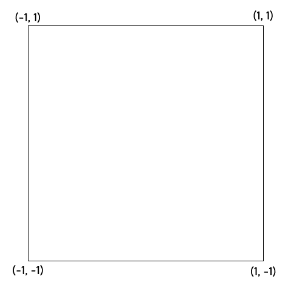

Shadow
Ở blog #11 của series trước ta đã làm shadow mapping bằng CPU, và ở blog #13 series trước ta đo được riêng khúc build shadow map đã ăn khoảng 12.5 ms mỗi frame, gần bằng nửa thời gian của cả frame, tối ưu hết sức trong blog đó thì vẫn còn khoảng 3.4 ms. Cuối blog #11 mình còn nói một câu là point light phải dựng tới 6 shadow map, nên "mô phỏng một cách mượt mà chỉ làm được trên GPU". Giờ ta đang ở trên GPU rồi, nên blog này ta vừa làm lại shadow cho directional light, vừa làm luôn shadow cho point light mà series trước bỏ dở 😳.Nhắc lại ý tưởng của shadow mapping một chút, phòng khi bạn chưa đọc series trước:
- Render cả scene thêm một lần nữa, nhưng dưới góc nhìn của nguồn sáng, và chỉ giữ lại depth buffer. Cái depth buffer đó gọi là shadow map, mỗi pixel của nó cho biết "từ đèn nhìn theo hướng này thì vật gần nhất cách bao xa".
- Lúc render bình thường, với mỗi pixel ta đưa tọa độ thế giới của nó qua render pipeline của đèn, rồi so độ sâu của nó với độ sâu lưu trong shadow map. Nếu nó sâu hơn, nghĩa là có thứ gì đó nằm giữa nó và đèn, tức là nó nằm trong bóng.
1. Directional light
a. Build view và projection matrix cho camera nguồn sáng
Việc copy code qua khá là straightforward, tuy nhiên có 2 thứ ta cần để ý:- Sửa lại Orthographic projection matrix cũng đưa z về khoảng [-1; 1] thay vì là [0; 1]
- Ở demo cuối series trước, trong hàm
buildViewAndProjectionMatrix, ta set frustum center là gốc tọa độ (cho đẹp), trong khi ta để nguồn sáng cách gốc tọa độshadowMapDistancevàzFarcủa nó cũng làshadowMapDistance. Như vậy, far plane sẽ cắt ngay gốc tọa độ, ở series trước thì không sao vì ta không quan tâm tới far plane (mình làm thiếu), nhưng WebGL thì sẽ cắt. Cho nên ta phải xử lí điều này.
m[2][2] và m[2][3] của ma trận:
class Mat4x4 {
...
static Orthographic(size, zNear, zFar) {
let matrix = new Mat4x4();
matrix.m[0][0] = 2.0 / size;
matrix.m[1][1] = 2.0 / size;
matrix.m[2][2] = 2.0 / (zFar - zNear); // series trước: 1 / (zFar - zNear)
matrix.m[2][3] = -(zFar + zNear) / (zFar - zNear); // series trước: -zNear / (zFar - zNear)
matrix.m[3][3] = 1.0;
return matrix;
}
...
}buildViewAndProjectionMatrix từ series trước qua,
và ta dùng lại frustumCenterđịnh là gốc tọa độ:
class DirectionalLight {
constructor(dir, intensity) {
this.dir = dir.normalize();
this.intensity = intensity;
this.viewMatrix = null; // <----------------------
this.projectionMatrix = null; // <----------------------
}
buildViewAndProjectionMatrix() {
let up = Math.abs(Vector3.dot(this.dir, Vector3.up)) < 0.99 ? Vector3.up : Vector3.forward;
let right = Vector3.cross(up, this.dir).normalize();
up = Vector3.cross(this.dir, right).normalize();
let frustumCenter = camera.getFrustumCenter(znear, shadowMapDistance);
let lightPos = Vector3.sub(frustumCenter, Vector3.mul(this.dir, shadowMapDistance));
this.viewMatrix = Mat4x4.View(right, up, this.dir, lightPos);
this.projectionMatrix = Mat4x4.Orthographic(shadowMapDistance, 0.1, shadowMapDistance * 2); // <-----------------------------
}
}zFar là shadowMapDistance * 2, khi đó
tâm của hình hộp chữ nhật projection của camera nguồn sáng sẽ trùng với tâm frustum của camera player, đảm bảo luôn đẹp 😁Thêm lại hàm
getFrustumCenter vào Camera:
class Camera {
...
getFrustumCenter(zNear, zFar) {
let forward = this.transform.getForward();
let near = Vector3.add(this.transform.position, Vector3.mul(forward, zNear));
let far = Vector3.add(this.transform.position, Vector3.mul(forward, zFar));
return Vector3.div(Vector3.add(near, far), 2);
}
...
}View from light để đổi qua đổi lại giữa góc nhìn player và góc nhìn nguồn sáng:
<div class="controlRow">
<label class="controlLabel" for="viewFromLight">View from light:</label>
<span><input type="checkbox" id="viewFromLight" /></span>
</div>const viewFromLightCheckbox = (document.getElementById("viewFromLight"));
let viewFromLight = false;
...
viewFromLightCheckbox.addEventListener("change", () => {
viewFromLight = viewFromLightCheckbox.checked;
viewFromLightCheckbox.blur();
});render:
function render() {
gl.clear(gl.COLOR_BUFFER_BIT | gl.DEPTH_BUFFER_BIT);
dirLight.buildViewAndProjectionMatrix();
if (viewFromLight) {
gl.uniformMatrix4fv(uView, false, dirLight.viewMatrix.toColumnMajor());
gl.uniformMatrix4fv(uProjection, false, dirLight.projectionMatrix.toColumnMajor());
} else {
gl.uniformMatrix4fv(uView, false, camera.getViewMatrix().toColumnMajor());
gl.uniformMatrix4fv(uProjection, false, projectionMatrix.toColumnMajor());
}
...
}View from light):
Hình hơi bị kéo ngang ra vì canvas là 4:3 còn hộp orthographic của ta là hình vuông,
nhưng không sao, shadow map của ta sẽ là texture vuông nên nó sẽ không bị như vậy.
b. Render vào texture thay vì canvas
Ta đang hiểu là mọi thứ ta vẽ từ đầu series tới giờ đều đi vào canvas, nhưng thật ra bên dưới nó đang đi vào một framebuffer mặc định. Frame buffer đơn giản chỉ là 1 vùng nhớ mà kết hợp cả color buffer (screen buffer) và depth buffer. Và WebGL cho phép ta tạo framebuffer của riêng mình bằnggl.createFramebuffer,
và gắn texture vào làm buffer cho nó bằng
gl.framebufferTexture2D.
Khi framebuffer đó đang được bind, mọi lệnh vẽ sẽ ghi vào texture đó chứ không ra màn hình nữa. Ta sẽ lưu shadow map như 1 texture và để nó
vào trong 1 frame buffer để WebGL render vào.Mình xin viết lại các tham số của hàm
gl.texImage2D để bạn dễ theo dõi:
gl.texImage2D(
// khe,
// mipmap level, nếu bạn chơi game nhiều bạn sẽ biết thuật ngữ này, mipmap là việc lưu các version nhỏ hơn của 1 texture để tối ưu
// internal format, là format mà webgl lưu,
// width,
// height,
// border, trong WebGL tham số này bắt buộc là 0 (WebGL không hỗ trợ border, cái này là tàn dư từ OpenGL),
// format truyền vào,
// kiểu của buffer,
// các pixel kiểu Uint8Array, vì pixels của Texture là kiểu Uint8ClampedArray (kiểu từ getImageData trả về) nên phải convert)DEPTH_COMPONENT24 (số depth 24 bit), còn format truyền vào thì là DEPTH_COMPONENT (format truyền vào không
thể là DEPTH_COMPONENT24 vì nó sẽ gây lỗi). Cho nên
hàm "truyền" texture shadow map vào WebGL là:
gl.texImage2D(gl.TEXTURE_2D, 0, gl.DEPTH_COMPONENT24, shadowMapSize, shadowMapSize, 0, gl.DEPTH_COMPONENT, gl.UNSIGNED_INT, null);null - ta không truyền vào gì cả, vì texture này là để GPU
tự sửa mỗi frame nên lúc đầu không cần pixel gì.Ngoài ra bạn nhớ ở blog 4 là khi truyền xong texture ta còn có 4 dòng để set các parameter về filter và wrap. Với shadow map thì filter và wrap cũng giống texture mà ta đang xài, là
NEAREST và gl.CLAMP_TO_EDGE.Như vậy, đoạn code tạo texture shadow map và để nó vào 1 frame buffer sẽ như sau, nó sẽ nằm hoàn toàn trong constructor của
DirectionalLight:
class DirectionalLight {
constructor(dir, intensity) {
...
// tạo 1 texture làm shadow map, texture này chỉ có depth
this.shadowMapTexture = gl.createTexture();
gl.bindTexture(gl.TEXTURE_2D, this.shadowMapTexture);
gl.texImage2D(gl.TEXTURE_2D, 0, gl.DEPTH_COMPONENT24, shadowMapSize, shadowMapSize, 0, gl.DEPTH_COMPONENT, gl.UNSIGNED_INT, null);
gl.texParameteri(gl.TEXTURE_2D, gl.TEXTURE_MIN_FILTER, gl.NEAREST);
gl.texParameteri(gl.TEXTURE_2D, gl.TEXTURE_MAG_FILTER, gl.NEAREST);
gl.texParameteri(gl.TEXTURE_2D, gl.TEXTURE_WRAP_S, gl.CLAMP_TO_EDGE);
gl.texParameteri(gl.TEXTURE_2D, gl.TEXTURE_WRAP_T, gl.CLAMP_TO_EDGE);
// framebuffer có depth attachment là texture ở trên, render vào đây thay vì canvas
this.shadowFramebuffer = gl.createFramebuffer();
gl.bindFramebuffer(gl.FRAMEBUFFER, this.shadowFramebuffer); // bind framebuffer vừa được tạo để gắn texture vào
gl.framebufferTexture2D(gl.FRAMEBUFFER, gl.DEPTH_ATTACHMENT, gl.TEXTURE_2D, this.shadowMapTexture, 0); // <------------------------------
gl.bindFramebuffer(gl.FRAMEBUFFER, null); // trở về frame buffer mặc định để vẽ lên canvas
}
...
}gl.framebufferTexture2D:
gl.framebufferTexture2D(
// khe
// attach vào đâu (color attachment, depth attachment, stencil attachment, ...), ở đây là depth
// loại texture (2D, 3D, cube map, ...), ở đây là 2D
// texture, ở đây là shadowMapTexture
// mipmap level, ở đây là 0 vì ta không dùng mipmap)shadowMapSize chung chỗ với shadowMapDistance, để là 2048, vì đây là GPU, nên ta không sợ lag hề hề:
let shadowMapSize = 2048;
let shadowMapDistance = 16;Ta có được frame buffer (được bind texture shadow) để render vào rồi, tiếp theo ta sẽ lo tới việc render. Render ra canvas thì ta cần texture, ánh sáng, đủ thứ, còn render ra shadow map thì chỉ cần depth, nên ta sẽ phải dùng một cặp shader khác với cặp shader đã có sẵn. Mà cặp shader khác thì đồng nghĩa là 1 program khác, cái này mình sẽ nói tới sau, giờ thì mình tập trung vào 2 shader mới trước.
Đầu tiên, vertex shader chỉ lấy vào tọa độ và 3 matrix để nhân:
#version 300 es
uniform mat4 uModel;
uniform mat4 uView;
uniform mat4 uProjection;
layout(location = 0) in vec3 aPosition; // giải thích bên dưới
void main(){
gl_Position = uProjection * uView * uModel * vec4(aPosition, 1.0);
}layout(location = 0), cái này dùng để xác nhận là "địa chỉ" của aPosition luôn là 0.
Lí do cụ thể: VAO không nhớ "attribute tên là aPosition", nó nhớ "attribute số mấy" (số mà gl.getAttribLocation trả về).
Số này do GPU tự gán lúc link program, và không ai đảm bảo 2 program khác nhau sẽ gán aPosition cùng một số. Nếu lệch số thì shadow program
sẽ đọc nhầm UV hoặc normal làm tọa độ. layout(location = 0) ép cả 2 program dùng số 0 cho aPosition, nên ta dùng lại được
VAO của mesh mà không cần tạo thêm. Cái layout(location = 0) này thì vertex shader chính cũng phải có.Còn fragment shader, ta không cần làm gì luôn, vì depth thì GPU tự ghi sau khi rasterize, không cần ta xuất ra:
#version 300 es
precision highp float;
void main(){
// không xuất màu gì cả, depth thì GPU tự ghi
}function createProgram(vertexSource, fragmentSource) {
const program = gl.createProgram();
gl.attachShader(program, compileShader(gl.VERTEX_SHADER, vertexSource));
gl.attachShader(program, compileShader(gl.FRAGMENT_SHADER, fragmentSource));
gl.linkProgram(program);
if (!gl.getProgramParameter(program, gl.LINK_STATUS)) {
throw new Error("Program link error: " + gl.getProgramInfoLog(program));
}
return program;
}
const program = createProgram(vertexShaderSource, fragmentShaderSource);
const shadowProgram = createProgram(shadowVertexShaderSource, shadowFragmentShaderSource);
gl.useProgram(program);gl.getUniformLocation nhận tham số program vì lí do đó).
Program khác nhau sẽ xài uniform khác nhau, nên ta phải tạo riêng các biến chứa địa chỉ cho shadow program:
const uShadowModel = gl.getUniformLocation(shadowProgram, "uModel");
const uShadowLightView = gl.getUniformLocation(shadowProgram, "uView");
const uShadowLightProjection = gl.getUniformLocation(shadowProgram, "uProjection");GameObject ta cũng phải có 1 hàm vẽ riêng cho shadow map drawDepth. Hàm vẽ này
chỉ set model matrix của shadow program rồi vẽ. Ngoài ra cũng có thêm hàm drawDepthWithChildren để vẽ từ cha tới con như hàm drawWithChildren:
class GameObject {
...
// mình để lại hàm draw ở đây để bạn so sánh
draw() {
if (this.mesh.vertexCount == 0) return;
gl.uniformMatrix4fv(uModel, false, this.transform.getModelMatrix().toColumnMajor());
gl.uniformMatrix4fv(uNormalMatrix, false, this.transform.getNormalMatrix().toColumnMajor());
if (this.texture) {
gl.activeTexture(gl.TEXTURE0);
gl.uniform1i(uTexture, 0);
gl.bindTexture(gl.TEXTURE_2D, this.texture.glTexture);
}
gl.uniform1i(uUseTexture, this.texture ? 1 : 0);
gl.uniform3f(uColor, this.color.r / 255, this.color.g / 255, this.color.b / 255);
gl.bindVertexArray(this.mesh.vertexArray);
gl.drawArrays(gl.TRIANGLES, 0, this.mesh.vertexCount);
}
drawDepth() {
if (this.mesh.vertexCount == 0) return;
gl.uniformMatrix4fv(uShadowModel, false, this.transform.getModelMatrix().toColumnMajor());
gl.bindVertexArray(this.mesh.vertexArray);
gl.drawArrays(gl.TRIANGLES, 0, this.mesh.vertexCount);
}
drawDepthWithChildren() {
this.drawDepth();
for (let child of this.transform.children) {
if (child.gameObject != null) {
child.gameObject.drawDepthWithChildren();
}
}
}
}drawDepth mới trong GameObject chỉ để render từng object ra shadow map
(vào frame buffer).
Ta đã có hết mọi thứ để vẽ shadow map rồi, chỉ còn thiếu ... shadow map, như vậy bây giờ ta tới phần build shadow map 😅Cũng như series trước, phần build shadow map sẽ nằm trong
DirectionalLight để gọi mỗi frame:
class DirectionalLight {
...
buildShadowMap(gameObjects) {
gl.bindFramebuffer(gl.FRAMEBUFFER, this.shadowFramebuffer);
gl.viewport(0, 0, shadowMapSize, shadowMapSize);
gl.clear(gl.DEPTH_BUFFER_BIT);
gl.useProgram(shadowProgram);
gl.uniformMatrix4fv(uShadowLightView, false, this.viewMatrix.toColumnMajor());
gl.uniformMatrix4fv(uShadowLightProjection, false, this.projectionMatrix.toColumnMajor());
for (let gameObject of gameObjects) {
gameObject.drawDepthWithChildren();
}
// trả lại canvas và program chính
gl.bindFramebuffer(gl.FRAMEBUFFER, null);
gl.viewport(0, 0, gameCanvas.width, gameCanvas.height);
gl.useProgram(program);
}
}- Hàm
buildShadowMapcủa series trước nhận vào list mọi tam giác đang được xử lí. Còn bây giờ nó chỉ cần nhận vào 1 list cácGameObject, nên bây giờ ta có thể controlGameObjectnào sẽ có shadow,GameObjectsẽ không gl.bindFramebuffer: từ dòng này trở đi, mọi lệnh vẽ đi vào framebuffer của đèn, tức là vàoshadowMapTexture, chứ không ra canvas.gl.viewport: nhớ lại ở blog #3 (phần 5), viewport là cái quyết định tọa độ [-1; 1] sau projection được kéo ra thành bao nhiêu pixel. Nó đang là 600x450 của canvas, phải set nó về 2048x2048 (shadowMapSize).gl.clear(gl.DEPTH_BUFFER_BIT): xóa depth của frame trước, đưa về 1 (xa nhất). Framebuffer này không có color buffer nên chỉ cần xóa depth.- Đổi qua shadow program để xài uniform và shader của program này
- Set view và projection matrix của "camera" của directional light một lần (vật nào cũng dùng chung ma trận này), rồi vẽ từng vật.
- 3 dòng cuối là trả mọi thứ về như cũ, 3 dòng quan trọng nhất nhưng cũng dễ quên nhất 🥶
buildShadowMap trong hàm render,
sau khi đã build view và projection matrix của Directional Light. Danh sách vật có shadow mình để ground và tòa tháp,
mấy cái point light chỉ mang tính chất tượng trưng nên không cần:
let shadowCasters = [ground, woodTower]; // <----------------------
...
function render() {
gl.clear(gl.COLOR_BUFFER_BIT | gl.DEPTH_BUFFER_BIT);
dirLight.buildViewAndProjectionMatrix();
dirLight.buildShadowMap(shadowCasters); // <----------------------
...
}Series trước ta vẽ shadow map ra một canvas khác, tuy nhiên đối với series này thì mình không làm vậy. Thật ra cũng không có gì khó, tạo 1 canvas mới đồng nghĩa tạo 1 context mới
gl2, rồi cứ sử dụng nó thôi. Nhưng với series này mình sẽ vẽ
nó vào góc trái dưới của chính canvas mà ta đã có. Vì làm như vậy ta sẽ biết thêm dc 1 vài trick, với nhìn nó gọn hơn 😳Dù là cũng vẽ lên canvas gốc, nhưng ta không thể sử dụng program canvas gốc, lí do cũng như phần trên: program gốc vẽ đầy đủ màu, texture các thứ, còn ta chỉ đang render shadow map. Như vậy là ta lại tạo 1 program mới 😅:
const program = createProgram(vertexShaderSource, fragmentShaderSource);
const shadowProgram = createProgram(shadowVertexShaderSource, shadowFragmentShaderSource);
const shadowMapDebugProgram = createProgram(shadowMapDebugVertexShaderSource, shadowMapDebugFragmentShaderSource); // <----------------------Thật ra, có 1 trick khá hay, đó là sử dụng
gl_VertexID,
gl_VertexID là số thứ tự của đỉnh hiện tại mà vertex shader đang xử lí, với quad thì nó sẽ lần lượt bằng 0, 1, 2, 3.
Nhưng mà có 4 số đó thì sao, ta có thể làm được gì? Giờ ta sẽ không quan tâm tọa độ của nó trong canvas trước, mà quan tâm tới 4 tọa độ
uv của nó, đó là (0, 0), (0, 1), (1, 0), (1, 1). Ta sẽ tạo ra 4 tọa độ này ngay trong
vertex shader bằng gl_VertexID. How? Cụ thể như sau.0, 1, 2, 3 viết thành nhị phân là 00, 01, 10, 11. Mình nói tới đây chắc bạn cũng nhìn ra được r luôn r =)))) Đúng vậy, ta sẽ bốc
số đầu tiên trong nhị phân ra làm x, và số thứ 2 ra làm y, it's just that simple.
Cách "bốc" ra thì sẽ sử dụng bitwise operation (nếu
bạn chưa biết thì google tìm hiểu nhé), lấy số đầu tiên thì ta dịch bit qua phải bằng toán tử >>, lấy số thứ hai thì ta dùng
toán tử &.Thế là ta đã có được 4 tọa độ UV 😳 Từ UV suy ra tọa độ NDC thì ta thực hiện lại cách chuyển từ [0; 1] sang [-1; 1], đó chính là nhân 2 và -1. Như vậy vertex shader sẽ như sau:
#version 300 es
out vec2 vUV;
void main(){
// 4 góc uv tự sinh từ gl_VertexID với ý tưởng trên, ko cần truyền aPosition gì cả
vec2 corner = vec2(gl_VertexID >> 1, gl_VertexID & 1);
vUV = corner;
// nhân 2 trừ 1 để ra NDC
gl_Position = vec4(corner * 2.0 - 1.0, 0.0, 1.0);
}vUV, dùng depth đó để tính ra 1 màu xám.
Depth càng nhỏ càng gần, màu càng nhỏ càng đen, ta muốn càng gần nó càng sáng nên ta đảo ngược lại lấy 1 - depth:
#version 300 es
precision highp float;
uniform sampler2D uShadowMap;
in vec2 vUV;
out vec4 outColor;
void main(){
float depth = texture(uShadowMap, vUV).r; // giải thích bên dưới
outColor = vec4(vec3(1.0 - depth), 1.0); // càng gần đèn càng sáng
}shadowMapTexture, được khởi tạo format là DEPTH_COMPONENT24),
sẽ chỉ lưu giá trị depth ở channel r, chứ g và b sẽ = 0. Nên ở trên mình chỉ lấy .r, đây chỉ là 1 cái bạn cần lưu ý.Các công đọan chuẩn bị vẽ shadow map debug đã xong bên GPU, giờ là bên CPU. Ta sẽ tạo 1 hàm
drawShadowMapDebug để để vào cuối
hàm render, nó phải làm những thứ sau:
- Set view port về kích thước mà ta muốn shadow map chiếm trên canvas
- Tạm thời tắt
DEPTH_TEST, để đảm bảo shadow map debug này luôn ở trên cùng - Chuyển qua program shadow map debug
- Kích hoạt texture unit 1 và để
shadowMapTexturevào đó, vì lúc này texture unit 0 đang xài cho texture thật của các GameObject. - Vẽ shadow map debug
- Đưa về lại texture unit 0, về lại program chính, bật lại
DEPTH_TEST, đưa về lại view port full canvas
drawShadowMapDebug sẽ như sau:
function drawShadowMapDebug() {
// bước 1
const debugSize = Math.floor(gameCanvas.height / 3); // đưa về 1/3 chiều cao canvas, vừa đủ nhỏ
gl.viewport(0, 0, debugSize, debugSize);
// bước 2
gl.disable(gl.DEPTH_TEST);
// bước 3
gl.useProgram(shadowMapDebugProgram);
// bước 4
gl.activeTexture(gl.TEXTURE1);
gl.bindTexture(gl.TEXTURE_2D, dirLight.shadowMapTexture);
gl.uniform1i(uDebugShadowMap, 1);
// bước 5
gl.bindVertexArray(null); // bind VAO null vì vertex shader không có attribute nào, không có dòng này cũng không sao nhưng làm vậy cho đúng
gl.drawArrays(gl.TRIANGLE_STRIP, 0, 4); // giải thích bên dưới
// bước 6
gl.activeTexture(gl.TEXTURE0);
gl.useProgram(program);
gl.enable(gl.DEPTH_TEST);
gl.viewport(0, 0, gameCanvas.width, gameCanvas.height);
}gl.drawArrays, mình xài primitive gl.TRIANGLE_STRIP chứ không
phải gl.TRIANGLES như trước. gl.TRIANGLE_STRIP nghĩa là "lấy 2 đỉnh trước swap lại, cộng với đỉnh hiện tại sẽ ra tam giác tiếp theo",
còn gl.TRIANGLES là "lấy từng bộ 3 đỉnh để làm tam giác".Tại sao mình lại dùng cái đó? Bạn để ý lại ở vertex shader, ta dùng trick
gl_VertexID để tạo ra 4 đỉnh UV:
(0, 0), (0, 1), (1, 0), (1, 1),
và từ 4 tọa độ đó suy ra được 4 tọa độ NDC: (-1, -1), (-1, 1), (1, -1), (1, 1).
Nếu với cách làm bình thường, để vẽ được 1 quad lên màn hình, ta phải biến 4 tọa độ NDC đó thành 6 tọa độ, hoặc là dùng lại 4 đỉnh đó nhưng phải đi kèm element buffer.gl.TRIANGLE_STRIP sẽ giải quyết được vấn đề đó, như trên mình nói, nó là "lấy 2 đỉnh trước swap lại, cộng với đỉnh hiện tại sẽ ra tam giác tiếp theo",
nghĩa là nó sẽ đi theo như sau:
[(-1, -1), (-1, 1), (1, -1)]sẽ tạo ra tam giác đầu tiên[(1, -1), (-1, 1), (1, 1)](đã swap 2 đỉnh đầu) sẽ tạo ra tam giác thứ 2

Cuối cùng là ta tạo một checkbox
Show shadow map để bật tắt việc vẽ shadow map debug:
<div class="controlRow">
<label class="controlLabel" for="showShadowMap">Show shadow map:</label>
<span><input type="checkbox" id="showShadowMap" checked="checked"/></span>
</div>const showShadowMapCheckbox = (document.getElementById("showShadowMap"));
let showShadowMap = showShadowMapCheckbox.checked;
...
showShadowMapCheckbox.addEventListener("change", () => {
showShadowMap = showShadowMapCheckbox.checked;
showShadowMapCheckbox.blur();
});drawShadowMapDebug trong render nếu checkbox được tick:
function render() {
...
if (showShadowMap) {
drawShadowMapDebug();
}
}View from light để so sánh với shadow map debug: chúng là cùng một góc nhìn, chỉ là một cái tô màu theo texture và ánh sáng,
một cái tô màu theo độ sâu. Và như đã nói ở phần a, hình View from light bị kéo ngang, còn shadow map debug thì đúng tỉ lệ,
vì shadow map là hình vuông.
c. So sánh độ sâu ở fragment shader
Quậy với shadow map đủ rồi, giờ là lúc sử dụng nó để render shadow ra canvas chính. Ý tưởng cũng y hệt series trước, với mỗi pixel ta đưa tọa độ thế giới của nó qua view và projection matrix của camera nguồn sáng (y như lúc build shadow map), rồi so sánh với độ sâu lưu trong shadow map. Ta thêm những thứ sau vào fragment shader chính:uniform sampler2D uShadowMap; // <----------------------
uniform mat4 uLightView; // <----------------------
uniform mat4 uLightProjection; // <----------------------
uniform bool uUseShadow; // <----------------------
...
// hàm này chính là hàm isInShadow của series trước, hàm này trả về 1.0 nếu pixel hiện tại nằm trong bóng, 0.0 nếu không
float getDirLightShadow() {
// đưa điểm này qua render pipeline của camera nguồn sáng, giống hệt lúc build shadow map
vec4 lightSpacePos = uLightProjection * uLightView * vec4(vWorldPosition, 1.0); // vWorldPosition ta đã có sẵn
// chuyển từ NDC [-1; 1] qua [0; 1] cho cả x, y, z luôn. xy thì để làm uv trên texture shadow map, z thì để so sánh với depth trong shadow map
vec3 shadowMapCoord = lightSpacePos.xyz * 0.5 + 0.5;
// nằm ngoài shadow map thì coi như không có bóng
if (shadowMapCoord.x < 0.0 || shadowMapCoord.x > 1.0 || shadowMapCoord.y < 0.0 || shadowMapCoord.y > 1.0 || shadowMapCoord.z > 1.0) return 0.0;
float closestDepth = texture(uShadowMap, shadowMapCoord.xy).r; // lấy depth của pixel trong shadow map, bằng uv mà ta vừa tính ra (shadowMapCoord.xy)
// so sánh giữa depth của pixel hiện tại (dưới góc nhìn của nguồn sáng) và depth của pixel trong shadow map
return shadowMapCoord.z > closestDepth ? 1.0 : 0.0;
}
...Hàm
getDirLightShadow trả về 1.0 nếu pixel hiện tại nằm trong bóng, 0.0 nếu không. Dù glsl có boolean để viết lại y như isInShadow
của series trước, nhưng mình dùng float, vì lúc sử dụng hàm ta có thể trừ trực tiếp để xét điều kiện, thay vì phải dùng if (GPU ghét if).
Ngoài ra còn 1 lí do nữa mình sẽ nói sau.Ở hàm main của fragment shader ta sử dụng hàm
getDirLightShadow như sau:
void main(){
vec3 color = uUseTexture ? texture(uTexture, vUV).rgb : uColor;
float dirLightDiffuse = (1.0 - (dot(vWorldNormal, uDirLightDir) + 1.0) / 2.0) * uDirLightIntensity;
float dirLightShadow = uUseShadow ? getDirLightShadow() : 0.0; // <----------------------
dirLightDiffuse *= 1.0 - dirLightShadow; // nằm trong bóng thì diffuse = 0
...
}buildShadowMap), và bind shadow map vào texture unit 1 (như mình đã làm ở shadow map debug):
function render() {
...
gl.uniform1i(uUseShadow, useShadow ? 1 : 0);
gl.uniformMatrix4fv(uLightView, false, dirLight.viewMatrix.toColumnMajor());
gl.uniformMatrix4fv(uLightProjection, false, dirLight.projectionMatrix.toColumnMajor());
gl.activeTexture(gl.TEXTURE1);
gl.bindTexture(gl.TEXTURE_2D, dirLight.shadowMapTexture);
gl.uniform1i(uShadowMap, 1);
gl.activeTexture(gl.TEXTURE0); // trả về unit 0 để vẽ texture của GameObject
...
}Shadow giống series trước để bật tắt, và bỏ tick mặc định của Show shadow map cho đỡ che màn hình.
Kết quả:
Shadow đã có, nhưng nó lại có những vân sọc lạ lạ. Không còn lạ gì nữa, đây chính là hiện tượng Shadow Acne mà ta đã gặp ở series trước 😳.
d. Shadow acne
Nhắc lại nguyên nhân xảy ra shadow acne: mọi điểm trong vùng ảnh hưởng của từng texel của shadow map đều có chung giá trị depth, trong khi thực chất depth của mọi điểm đều khác nhau, xảy ra hiện tượng 1 nửa số điểm nằm trong shadow và 1 nửa số điểm nằm ngoài shadow.Cách sửa cũng y như series trước, 2 thứ:
- Shadow bias: cộng một số nhỏ vào depth của shadow map trước khi so sánh, tức là phải sâu hơn hẳn một khoảng mới tính là trong shadow.
- Normal offset: đẩy điểm cần kiểm tra ra ngoài theo pháp tuyến một chút trước khi đưa qua pipeline của đèn. Đẩy tối đa 1 texel, và đẩy càng nhiều khi mặt phẳng càng song song với tia sáng (tích vô hướng càng gần 0), vì đó là lúc texel bị kéo dài nhất, acne nặng nhất.
isInShadow của series trước:
let dotProduct = triWorldNormalX * this.dir.x + triWorldNormalY * this.dir.y + triWorldNormalZ * this.dir.z;
if (dotProduct >= 0) return false;
let texelSize = shadowMapDistance / shadowMapSize;
let normalOffset = texelSize * (1 - Math.abs(dotProduct));
let lightSpacePos = new Vector3(
pixelWorldPosX + triWorldNormalX * normalOffset,
pixelWorldPosY + triWorldNormalY * normalOffset,
pixelWorldPosZ + triWorldNormalZ * normalOffset,
);
...uniform float uShadowBias;
uniform float uShadowTexelSize;
...
float getDirLightShadow() {
float dotProduct = dot(vWorldNormal, uDirLightDir);
if (dotProduct >= 0.0) return 0.0;
// đẩy điểm ra theo pháp tuyến, càng song song với tia sáng thì đẩy càng xa (tối đa 1 texel)
float normalOffset = uShadowTexelSize * (1.0 - abs(dotProduct));
vec3 offsetPosition = vWorldPosition + vWorldNormal * normalOffset;
vec4 lightSpacePos = uLightProjection * uLightView * vec4(offsetPosition, 1.0);
...
return shadowMapCoord.z > closestDepth + uShadowBias ? 1.0 : 0.0; // cộng uShadowBias vào depth của shadow map trước khi so sánh
}uShadowBias và uShadowTexelSize và truyền vào GPU từ CPU:
const uShadowBias = gl.getUniformLocation(program, "uShadowBias");
const uShadowTexelSize = gl.getUniformLocation(program, "uShadowTexelSize");
...
let shadowBias = 0.0005;
...
gl.uniform1f(uShadowBias, shadowBias);
gl.uniform1f(uShadowTexelSize, shadowMapDistance / shadowMapSize); // xem lại series trước nếu bạn quên tại sao texelSize lại bằng công thức nàye. Làm mờ viền bóng với PCF
Shadow bây giờ đang khá răng cưa, dù shadow map size là 2048x2048 rồi, tăng nữa thì khá là tốn tài nguyên. Ta có thể làm mờ bóng đi bằng kỹ thuật PCF (Percentage-Closer Filtering) 😳 Nghe thì có vẻ đao to búa lớn nhưng thực chất nó rất đơn giản, chỉ là so sánh với các texel xung quanh trong shadow map thay vì chỉ 1 texel, rồi lấy trung bình kết quả so sánh.Cụ thể, với 1 điểm
vWorldPosition, sau khi đã chuyển sang shadowMapCoord (tọa độ [0; 1] sau khi đã qua render
pipeline của nguồn sáng), thì thay vì dùng shadowMapCoord.z để so sánh với độ sâu ở tọa độ
shadowMapCoord.xy trong shadow map. Thì ta sẽ so sánh nó với độ sâu của 9 texel trong vùng của
shadowMapCoord.xy, rồi lấy phần trăm texel nằm trong shadow
làm kết quả của hàm getDirLightShadow. Chú ý là bạn đừng nhầm lẫn với trung bình độ sâu của 9 texel
nhé (trung bình độ sâu 9 texel xung quanh sẽ ra 1 độ sâu lơ lửng ở giữa), mà nó là phần trăm texel nằm trong shadow của
9 texel đó.Để lấy được các texel xung quanh, thì ta chỉ việc cộng trừ kích thước 1 texel trong shadow map, kích thước này chỉ là \(\frac{1}{2048}\) (nó khác kích thước texel thế giới mà mình nói ở trên, which is
shadowMapDistance/shadowMapSize).
Số 2048 thì ta sẽ lấy bằng hàm textureSize(uShadowMap, mipmap level).Ta sửa phần cuối của hàm
getDirLightShadow như sau:
float getDirLightShadow() {
...
// dùng hàm textureSize để lấy kích thước 2048x2048, rồi tính texel size 2D = (1/2048, 1/2048)
vec2 texelSize = 1.0 / vec2(textureSize(uShadowMap, 0));
// loop qua 9 texel, nếu nằm trong bóng thì +1, không thì không cộng, sau đó chia 9 là ra được phần trăm
float shadow = 0.0;
for (int x = -1; x <= 1; x++) {
for (int y = -1; y <= 1; y++) {
float closestDepth = texture(uShadowMap, shadowMapCoord.xy + vec2(x, y) * texelSize).r;
shadow += shadowMapCoord.z > closestDepth + uShadowBias ? 1.0 : 0.0;
}
}
return shadow / 9.0;
}0.0015 là ô kê.Kết quả: